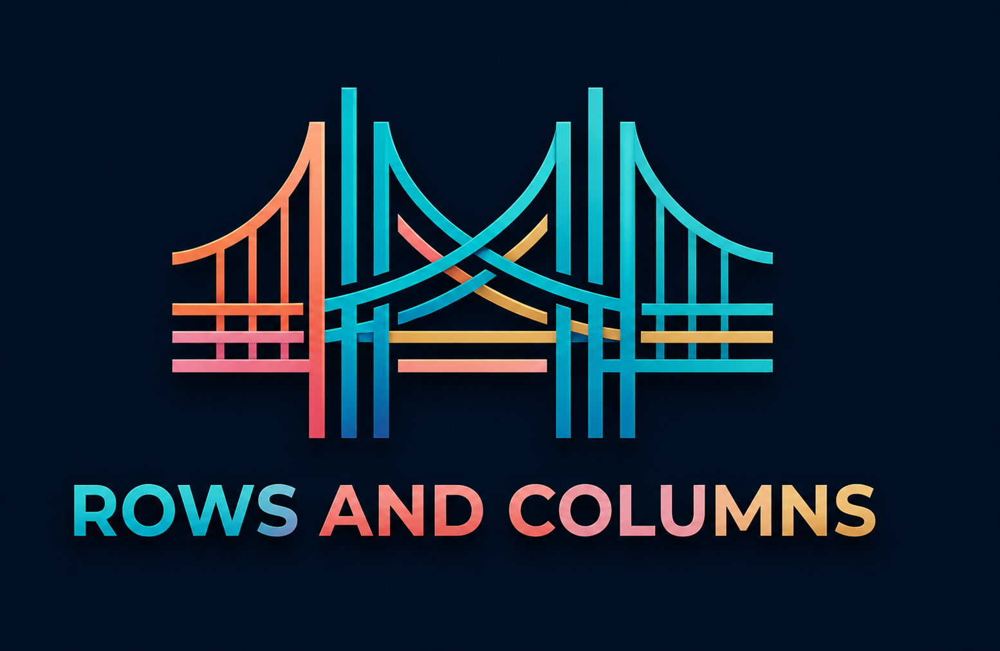

A practitioner-first conference on the architecture question that won't go away: OLTP and OLAP, together or apart? Real systems, real tradeoffs, real numbers — from engineers who've lived them.

The convergence of OLTP and OLAP is a generational architectural shift, not a niche trend. You can see data teams at any scale keep arriving at the same conclusion: transactional and analytical workloads need to work together. Even though they have fundamentally different physical requirements, data systems of the future will need to optimize for both in a single engine means compromising on both. Is hybrid architecture the way? Open table formats? CDC? Purpose built systems? A new paradigm of data architecture is emerging to merge OLTP and OLAP into purpose-built systems and there are a lot of approaches and even more tradeoffs. The era of AI is pushing the topic to the top of everyone's priority list. This event brings together data practitioners and enthusiasts to discuss the world of rows and columns, data systems for both transactions and analytics.
Single-track from open to close.
Practitioners, researchers, and engineers with real things to say. Speaker lineup updates as confirmations come in.
Rows & Columns is organized by a small independent board of three including practitioners and community leaders with deep roots in data infrastructure. Backed by ClickHouse, with an independent program committee and blind CFP review.
Rows & Columns Summit is a brand new conference drawing 400+ attendees, welcoming data engineers, architects, and platform leads who evaluate and choose the tools their companies run on. Sponsorship is a great oppurtunity to get your name out there and build brand recognition.
Get the sponsor deck →